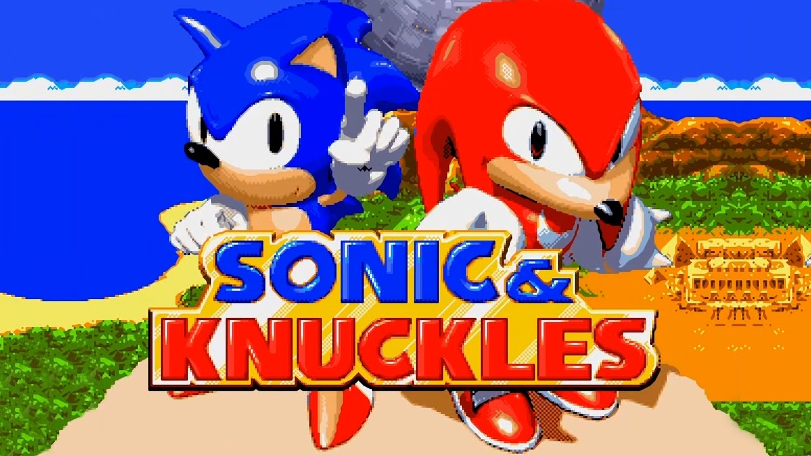

Sonic and Knuckles
imagem do jogo Sonic and Knuckles
Sonic & Knuckles[a] é um jogo de 1994 desenvolvido e publicado pela Sega. A sequência de Sonic the Hedgehog 3 (1994), jogadores controlam Sonic the Hedgehog e Knuckles the Echidna em suas missões para salvar Angel Island; Sonic tenta impedir o Doutor Robotnik de relançar sua arma orbital, o Ovo da Morte, enquanto Knuckles briga com o lacaio de Robotnik, EggRobo. Como os jogos anteriores do Sonic, os jogadores atravessam os níveis de rolagem lateral em altas velocidades enquanto coletam anéis e derrotam inimigos.
O Sega Technical Institute desenvolveu o Sonic & Knuckles simultaneamente ao lado do Sonic 3; eles foram planejados como um único jogo até que as restrições de tempo e os custos do cartucho forçassem os desenvolvedores a dividi-lo. O cartucho Sonic & Knuckles possui um adaptador que permite que os jogadores conectem o cartucho Sonic the Hedgehog 3, criando um jogo combinado, Sonic 3 & Knuckles. Sonic the Hedgehog 2 (1992) também pode ser anexado, permitindo que os jogadores controlem Knuckles em estágios Sonic 2.
Sonic & Knuckles foi lançado para o Sega Genesis em 18 de outubro de 1994. Sonic 3 & Knuckles vendeu um combinado de quatro milhões de cópias em todo o mundo, tornando-os alguns dos jogos mais vendidos do Sega Genesis. Sonic & Knuckles recebeu críticas positivas; os críticos ficaram impressionados com o valor de replay e a tecnologia lock-on, apesar de sua semelhança com Sonic 3. Ao lado do Sonic 3, uma porta do Windows foi lançada através da Sonic & Knuckles Collection (1997). Ele também foi relançado através de várias compilações e em plataformas digitais como Xbox Live Arcade e o Console Virtual do Wii, enquanto foi empacotado com Sonic 3 no Steam.
Uma vez que Sonic & Knuckles e Sonic the Hedgehog 3 foram inicialmente desenvolvidos como um jogo, sua jogabilidade é semelhante: ambos são plataformas de rolagem lateral 2D com design de nível semelhante, gráficos e mecânica de jogo. No entanto, em Sonic & Knuckles, ao contrário de Sonic 3, o jogador escolhe Sonic ou Knuckles na tela do título,[3] Miles "Tails" Prower não está disponível para selecionar, e o jogador não pode controlar dois personagens juntos. Também não há modo multiplayer ou recurso de salvamento. [4]
O personagem do jogador passa por seis níveis, cada um dividido em dois atos. [5] O primeiro ato de cada nível termina com uma luta miniboss com um dos robôs do Dr. Robotnik,[6] enquanto o segundo termina com uma luta de chefe regular com Robotnik (ou EggRobo na campanha de Knuckles). [7] Sonic e Knuckles atravessam níveis de forma diferente; Sonic pode saltar um pouco mais alto e tem acesso a habilidades de escudo únicas, enquanto Knuckles pode deslizar e escalar a maioria das paredes. Os níveis também incluem cutscenes que diferem com base no personagem selecionado, já que Sonic e Knuckles são adversários na maior parte do jogo. [3]
O jogo contém dois tipos de etapas bônus acessadas passando por um ponto de verificação com pelo menos 20 anéis. O primeiro tipo tem a órbita Sonic ou Knuckles flutuando, esferas brilhantes, saindo de cada uma quando um botão é pressionado, enquanto uma cerca de luz se aproxima da parte inferior e removerá o jogador do palco se tocado. Colecionar 50 anéis nesta fase rende ao jogador uma continuação. O segundo tipo envolve saltar ao redor de uma sala com uma máquina caça-níqueis em seu centro com a intenção de ganhar vidas extras e power-ups. [8]
Etapas Especiais são inseridas encontrando anéis gigantes escondidos em passagens secretas: o jogador é colocado em um ambiente 3D e deve tornar todas as esferas azuis vermelhas correndo através deles, mas deve evitar todas as esferas vermelhas, incluindo as anteriormente azuis. Esferas amarelas saltam o jogador a longas distâncias, e esferas brancas com estrelas vermelhas fazem o jogador andar para trás na direção oposta. Completar uma Etapa Especial rende ao jogador uma Esmeralda do Caos; colecionar todas as sete Esmeraldas permite que o jogador se transforme em Super Sonic ou Super Knuckles, versões mais poderosas dos personagens. [8]